Developer Startup
Developer First Steps
Documentation overview
Developer documentation
Information
Starting
Codebase Info
Further Details
Version Release
This information is for developers of the OED software so this information is not usually of interest to a general user.
The update to the Redux Toolkit (RTK) is not yet reflected in the documentation. As a result, some information may be out of date.
OED appreciates that there is a lot of information and details on this page. They were developed from the experience of many developers. It is normally the case that developers that carefully follow the directions have no issues and can quickly and readily get OED working. If one does this and still have issues then please contact us.
This page has the following main sections:
- Prerequisites: Steps/information needed before starting installation including the Contributors License Agreement and Windows OS considerations.
- GitHub: Using GitHub to get the OED repository (and a link for how to create pull requests).
- Docker: Getting Docker used for OED installation.
- IDE: The development IDE, esp. VSC.
- Install and run OED in a terminal: This is the current recommended way to run OED.
- Using OED: Using OED in a web browser and verifying it works correctly.
- OED Recommended VSC extensions
- Using an OED Docker terminal: How to run OED commands and access the Docker containers.
- Getting OED Docker information
- OED test data: Loading standard developer data into OED.
- Technologies OED uses
- Multi-author work: Suggestions on how teams can properly acknowledge group work.
- Issues: What to do if one has issues.
- Install and run OED in a VSC container: Another way to run OED (not the currently recommended one).
- Getting help
These directions refer to a terminal. This is sometimes called a shell.
These directions refer to changing to the main OED directory. This is the directory with the CODE_OF_CONDUCT.md and other files. To do this in a Unix/Linux terminal use cd <directory with cloned OED>. One needs to replace <directory with cloned OED> with the location of the cloned copy of OED. Some people find it easiest to locate that directory using the file manager on their OS and then use that information to get to the needed directory. As an example, one might do cd /home/username/projects/OED if one cloned OED in the /home/username/projects/ directory and used git clone without a . (period) at the end.
The following steps should get one ready to contribute to OED in a fairly short period of time. Please know that OED is here to help so see the help section at the bottom of the page if one need it.
Prerequisites
Stay in contact with the OED project
We strongly encourage anyone to contact the OED project as a potential developer. Visit our contact us page to join our Discord channel or reach our contact form. Doing this lets us know about you and OED can help you select tasks that will be interesting to you and also benefit the project.
Contributor License Agreement
Before one can submit work to OED, one needs to sign the Contributor's License Agreement.
Windows OS
If one is using Windows OS (version 10+) then one will want to use the Windows Subsystem for Linux (WSL) that allows Docker to run on Windows.
Information for Windows OS developers will be displayed as shown here. It is important and generally necessary for success to follow the steps/information given in these items.
Make sure ones WSL is fully installed correctly, following these steps. One should not use WSL-1. Installing WSL before Docker is helpful with the setup.
These directions refer to Ubuntu since it is the most common Linux used with WSL and OED. However, any version of Linux should work similarly. If one does not care about the version of Ubuntu used, OED suggests the latest LTS (Long Term Support) version as that is very stable and supported. Other version should work fine.
GitHub
The OED project resides on GitHub so one needs a login to contribute to the project.
OED uses the fork model for development. (There are many descriptions on the web of this process if one is not familiar with it. The GitHub ones include a general one and one with more operational details.) The basic steps are:
- If not already logged into ones GitHub account then do that.
- Go to the main OED GitHub page where the OED code resides.
- Fork the OED project onto ones own GitHub account by clicking the 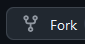. After this completes, one should have a copy of the OED repository on ones own GitHub account.
- Clone the OED repository onto ones own development machine. The URL for cloning can be found by going to ones GitHub page, going to ones OED repository (the one forked), and clicking on the green "Code" drop down (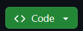). Note the clone will place all the files inside a new directory named OED unless one put a . (period) at the end of the
git clonecommand, i.e.,git clone <web location of ones OED GitHub fork> .where one replaces<web location of ones OED GitHub fork>with the actual location of one's OED fork.
If one clones from the OED GitHub page rather than the clone from ones account of the forked version then one will not be able to easily push ones changes since one cannot write to the OED repository. This should be avoided.
When using WSL, it is critical that one places the clone of OED on the Ubuntu file partition. Due to differences in how files are stored between Windows OS and Ubuntu, esp. the line ending character(s), failure to do this will lead to issues where code changes will not automatically be updated in the OED code bundle. This is consistent with the best practices given in the Docker WSL information (at least when this was written). The following steps will properly do this:
1. Open an Ubuntu terminal. One can search for “Ubuntu” from the Windows “Start” menu.
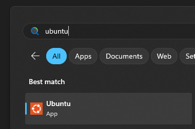
This should open a terminal within the Ubuntu WSL system.
2. As desired, create a directory for the OED clone and cd to it. Note one can skip this and adding the . (period) at the end of the git clone if one is okay with it in the OED directory under the home directory of ones Ubuntu account.
3. Clone OED as described at the start of this step.
This model has the advantage that one can commit and push to their account without needing write permission on the main OED project repository.
There are separate directions of the steps for creating a pull request to integrate ones code into OED.
Docker
OED uses the Docker container system to run the software so one needs to download and install Docker. (One needs both Docker and docker compose but one generally gets those together during the install.) There are paid subscriptions but ones non-commercial work on the Open Source Software OED project does not require a paid subscription. This has the advantage that our configuration files for Docker can get any needed software and also means OED does not modify ones normal system since the setup is in a separate container that does not impact other programs on ones computer. Note that Docker should run on all OSes so one should be able to use it.
One must have Docker running to be able to start OED. If it is not running then one will get error messages. One example is bash: /usr/bin/docker: No such file or directory but others happen. Note that if one runs within the VSC container then it may automatically try to start Docker.
Make sure Docker is correctly configured to work with WSL following these steps.
IDE (often VSC)
One is are welcome to use any IDE for code development. Having said that, most OED developers use Visual Studio Code (VSC).
tabs vs spaces
OED expects all coding files to use tabs and not spaces for indenting. The rationale is each developer can choose how many spaces to use for each tab. If one uses the ESLint VSC extension then it should note any violations. The following may be useful to VSC users:
- One can tell if VSC is using spaces or tabs by looking at the information at the bottom of the VSC window. This highlights that VSC is usings spaces: 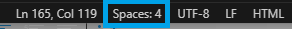.
- Onme can switch between spaces and tabs by clicking the spaces information shown above and select "Indent Using Tabs" as highlighted here:
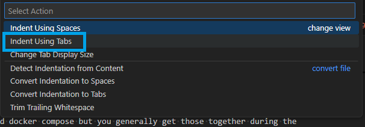 - To convert the existing spaces to tabs, click the spaces information shown above and select "Convert Indentation to Tabs" as highlighted here:
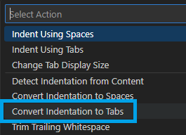 - These VSC setting may help with controlling indentation:
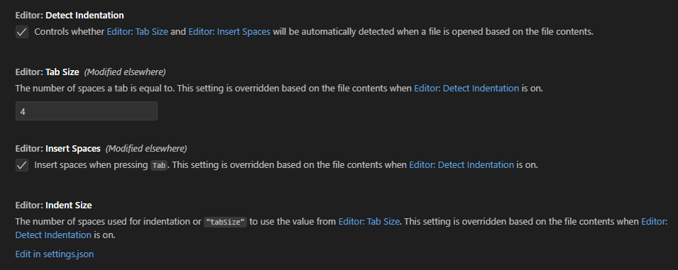
It is important one opens the OED directory in VSC within WSL. While it is fine to use the VSC command WSL: Open Folder in WSL..., it can be difficult to get to the Ubuntu partition the first time. It is often easier to do the following:
1. Open an Ubuntu terminal. One can search for “Ubuntu” from the Windows “Start” menu.
This should open a terminal within the Ubuntu WSL system.
2. Go to the directory with the main OED file.
3. Enter code . and hit enter/return. This should start VSC on ones Windows OS system in the main OED directory as a normal window using the WSL system. Note the first time Linux may need to install VSC for use with Ubuntu; this normally happens automatically on Ubuntu. Note one should probably install VSC on Windows before doing this.
If this worked correctly, one will see “[WSL: Ubuntu]” in the VSC “File Explorer” as seen here:
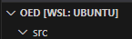.
After opening the first time, one should be able to start VSC directly in Windows using the normal icon and have this directory in the recently used ones. One can repeat these steps for a new clone or if the directory is not shown in the recently opened ones. If one ever has a folder open outside WSL but it is actually on WSL then one can use the command to reopen in WSL (sometimes VSC will suggest one do that). It is very important that VSC show it is using WSL as in the figure above.
Install and run OED in a terminal
The OED repository contains the files necessary to automatically start OED in a VSC Docker container. Note this is a different container from the two Docker containers that OED uses to run. While this has some advantages as given below in the section on running with the OED VSC container, OED developers are currently experiencing failures when doing this. Given this, OED developers are encouraged to install/run OED as described in this section rather than using the VSC Docker container. Note this method generally starts up faster and uses less CPU/memory on ones computer.
After opening the OED directory in VSC, VSC will typically ask if one wants to reopen the folder in a container by showing this message:
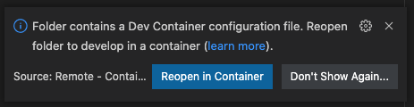
To avoid opening in the VSC Docker container, click to close this alert. If one does not want to see this again, click the “Don’t Show Again…” button.
While there is further information on more advanced options for doing this, the initial install can be done by following these steps:
- Open a terminal on ones computer. It is fine to use a terminal within VSC. In the terminal do the following:
cd "main OED directory"In the past, some developers have used npm or other commands to start OED. OED recommends against doing this as it can cause issues with running and developing OED.
docker compose upThis will run the entire OED install process.Note that on some systems (mostly some Linux systems), depending on how one installed Docker, one may get a permission error so one will need to do:
sudo docker compose upwhich runs the process with root privileges. If this is the case then one needs to do sudo before all docker commands on thieir system or address this more globally.
Depending on the speed of ones machine and internet connection, this may take a few minutes. It should go faster after the first install. One will see a lot of output in the terminal where one started OED about installing the database (Postgres), getting needed packages (this can take a while so one may not see output for a while) and starting up the web system. Toward the end of the output one should see two items:web-1 | webpack 5.76.3 compiled successfully in 975 mswhere the exact information may vary. What is important is it sayssuccessfully. If it has a failure message then something went wrong.web-1 | <s> [webpack.Progress] 100%. One will see a number of other lines with less than 100%. This final line indicates the build is done and the OED web server is ready to accept requests from a web browser.If one makes a web request before this line appears then one may get a connection denied, the old version (if making code changes) or an improper web page. Note the OED Docker containers will be started/running before OED can accept web connections.
If one opened the terminal within VSC while in the main OED directory then it will normally already be in the main OED directory and not need the next step. If not, one will need to switch to that directory.
- To stop OED, go to the terminal where OED was started and enter a single ^c (control and letter c). If a second ^c is entered then it will force stop OED and there is a chance the container will not be properly cleaned up so it is advised not to do this. If one cannot find the terminal where OED was started (may it was accidentally closed), then open another terminal as one did to start OED (in correct directory) and do
docker compose down. A final option, if none of these work, is to stop the container within Docker. - The developer pages often refer to output from OED. It will shown in the terminal where OED was started.
It is best that the terminal be in WSL/Ubuntu. If one followed the directions above to get VSC in WSL then the terminal opened in VSC will be in WSL/Ubuntu.
One should not close this terminal until OED is shut down because it will receive all OED server message that can be valuable.
Using OED
- Once OED is installed and running, one will want to open it in a web browser. It should not matter which one is used. Enter the address:
localhost:3000and load the page. "localhost" indicates the page is being served up from ones machine and "3000" is the default port that OED uses to accept web connections. If all went well, one will see the main OED web page that looks something like: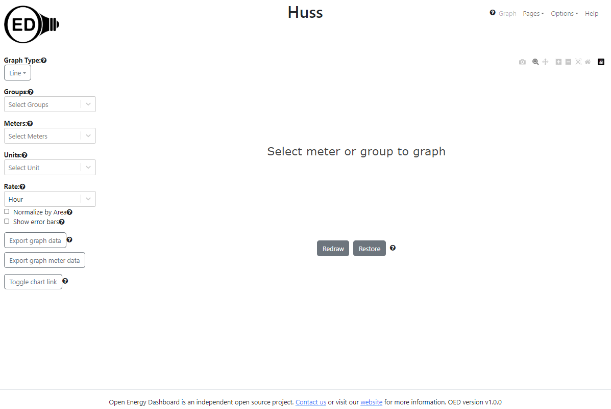 If one see this then the basic OED install worked and their system is properly serving up the OED web system.
- Though not common, it is possible for the OED web system to run without starting the underlying database system. To verify that the database is running properly, one should log into OED as the admin. The username and password were shown during the install process. By default they are:
email: test
password: password
Yes, the password really is password but remember it is running on ones local machine in a container so it should not be accessible to others. If it fails one should see a message appear briefly in the top, right corner of the page. If this happens, please follow the steps below to contact us and include any output in the terminal. - If all went well, one now has a fully running development version of OED that can be used to begin coding. Congratulations!
OED Recommended VSC extensions
VSC has several extensions OED thinks are valuable. OED recommends that developers consider using them. These are automatically included in the OED VSC container.
- Docker: Allows one to work with Docker directly in VSC with many features of the Docker Desktop. Once installed it can be accessed by clicking the Docker icon ().
- GitLens — Git supercharged: This shows detailed information on Git commits, who made changes, file history and more. It makes working with Git inside VSC much nicer.
- ESLint: This checks that ones code is in a valid structure and format as generally used and required by OED. The automated OED checks on pull request submission will run similar tests so this helps avoid issues.
- Code Spell Checker: It will help one avoid spelling mistakes that lead to pull request comments as OED expects correct spelling.
- GitHub Pull Request: It lets one work with GitHub within VSC including creating, commenting on and working with pull requests all with VSC features.
These can easily be installed (or see if it already is installed) using the VSC Extensions ().
Using an OED Docker terminal
Running a terminal in the OED Docker containers differs from running in a standard terminal on ones machine, including opening a terminal from the VSC “terminal” menu. The reason is that the OED Docker terminal has the full OED environment. If one runs outside the OED Docker container terminals then the result may be unpredictable.
One can only attach a terminal to the OED Docker container if OED is running
The developer web pages assume one assesses a terminal inside of the Docker container. There are two main ways of doing this:
- If one is using VSC with the Docker extension () then one can use it (see here for info). Right click on the desired OED Docker container and select "Attach Shell" as shown next:
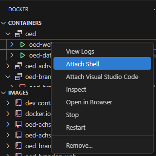
One normally gets a prompt similar toroot@20124d33c2c7:/usr/src/app#. - Using the Docker Desktop, go to containers, and use the drop down menu (three vertical dots) on the OED container to "Open in terminal" as shown next:
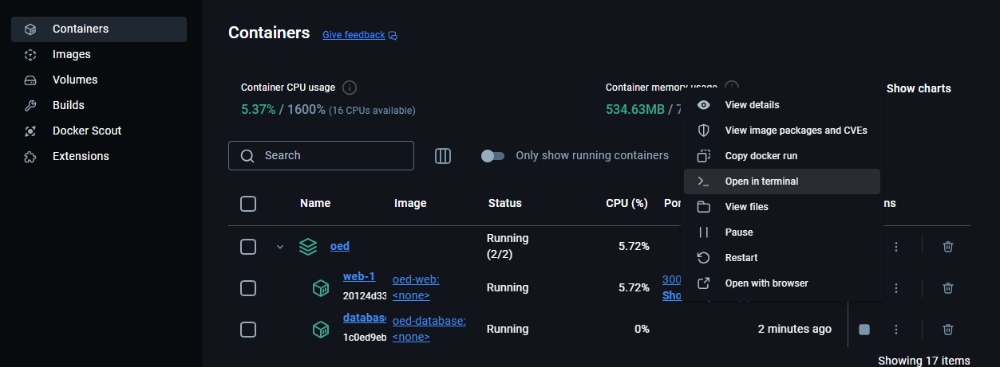
One normally gets a prompt similar to#.
The terminal in the OED Docker container runs as root. This allows the developer to make any desired change but also allows one to change/damage the OED information. Care should be used.
Getting OED Docker information
- It should show information on all the Docker images/containers one has. The containers that are currently running have a green triangle next to them. One can get the following choices by right clicking on a container:
- View Logs: The web container will not show much since the OED output is in the terminal used to start oed (or in nohup.out if using the OED VSC container). The database one will show messages from PostgreSQL. These open a new terminal that one can remove with the trash can icon.
- Attach Shell: This puts one in a shell within the container that is using the OED environment (see for more info.).
- In the shell inside the database container one can do:
psql -U oedto open the Postgres command line. This will allow one to look at the live OED database. One can also see the OED startup files for the database withls docker-entrypoint-initdb.d. - In the shell inside the web container, one can look at the environment variables or do other Linux operation. One can run any script in package.json, e.g.,
npm run check. One can see all the running processes withps -aux.
- In the shell inside the database container one can do:
- Inspect: Opens a JSON file that gives detailed information on the container that can be useful for debugging issues.
- Open in Browser: For the web container, this will go to localhost:3000.
- Stop, Remove: Stop or remove the container where stop is useful if something does not shut down properly.
The following assumes one has the VSC Docker extension as described above. Similar information is available via the Docker Desktop.
OED test data
When one installs OED, it does not have any data. An actual site would connect up meters to gather data. For a developer, OED has standard test data one can use. The OED test data page has information and directions for doing this. OED suggests one loads up the data now so one can try any features desired in OED. Note that an advantage of this test data is that it is the same for all developers so people should be able to reproduce what one mentions if one has a question or issue.
Technologies OED uses
OED uses a number of technologies. One may want further information on these and some are provided on the OED technologies page. OED welcomes input on other areas people would like to know about or other resources one finds valuable. Note that one can work on parts of OED without knowing many of the technologies in any depth. For example, one can work on database queries without knowing about the front-end. Thus, many developers begin in areas they know or want to learn first and focus on that needed information. Having said that, almost the entire code base is in JavaScript/TypeScript so a basic understanding of that is usually needed to get started.
Multi-author work
It is common for a team to work on OED together. If one is doing this and want to give another person acknowledgement on a commit, then see GitHub info on multiple authors.
Issues
If anyone has any issues please copy the current output from the terminal used to start OED (or nohup.out if using the VSC OED container) and forward it along with any other information to the OED project by contacting us. We will look it over and get back to you. We try to do that quickly. It is also fine to send a message to the developer Discord channel to seek answers.
Install and run OED in a VSC container
This method has the advantages that one does not have to open a terminal or get all the recommended VSC extensions. However, developers have been having issues/failures with this method of running OED. Furthermore, this method generally starts up slower, uses more CPU/memory on ones computer and is harder to see OED developer messages. Given this, it should only be used when desired/necessary and the method of running in a terminal (described here) is normally recommended. See the section on OED VSC issues for more information.
If the last install of OED was from the terminal then it is critical that the two OED containers are remove. The steps are part of the information in the OED VSC issues section. Note the same steps must be followed if going from the OED VSC Docker container to using a terminal install.
This only works if one uses VSC as ones IDE. One needs to have the “Remote Development” VSC extension for this to work. Click on the Extensions manager icon on the far left of the VSC window () to see if one has it. If not, search for “Remote Development” and install it. One will get several Extensions included with this one.
The OED repository contains the .devcontainer folder that allows VSC to automatically launch and set up the needed Docker containers. Here are the directions:
This assumes one has opened the main OED directory in VSC as described above.
Typically, VSC will ask to reopen the folder in a container by showing this message:
One can click the button "Reopen in Container". One will often see a popup in VSC that indicate one can click to see the log: 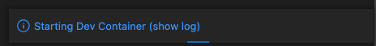
The first time OED installs it can take a while where the time depends on the speed of ones machine and internet connection (to get the needed npm packages). One can see the output of the install and anything OED outputs to the console by looking at the file nohup.out that will be created in ones main OED directory. If one opens this in VSC it should update with new lines at the bottom as they are added. See full install output or install without Postgres or npm install output to see a typical install output and for information if something goes wrong.
If one waits a while (depends on machine speed but normally not more than 5-10 minute) and doesn’t see the install output in nohup.out then something is likely wrong. Note if there is no nohup.out file then the install did not work. See below on possible issues and solutions. OED starts new output from an install with a line such as web-1 | ***** Starting install of OED at Sat Aug 31 21:18:28 UTC 2024 *****. Searching from the bottom of the file for **** and going upward should find the latest install output.
If VSC does not automatically ask to open in a container, one can click the “Remote Container” icon () that is normally in the bottom, left of the VSC window and select “Reopen in Container” for the menu that appears.
Once OED is running one should be able to see the web and database Docker containers running via Docker (either the VSC extension or the desktop). See Docker information for more info on doing this.
One can shut down the OED VSC container by clicking the green icon for the Remote Container and selecting "Close Remote Container".
All output from the OED server will show in the nohup.out file located in the main OED directory. The latest information is at the bottom.
OED VSC issues
As mentioned above, developers are experiencing issues using this system. These mostly revolve around the install failing. When this happens, it is often fixed by doing the following:
- Exiting the OED VSC Docker container by clicking the green icon for the Remote Container and selecting "Close Remote Container".
- Normally the OED Docker containers will not be running but stop them using Docker as described above.
- Remove both OED Docker containers (web and database) but not the images as described above.
- Try restarting OED by reopening the OED VSC container as described above.
If one rebuilds the VSC container too soon after a build failure then it may fail again. Normally the time taken for the steps above avoids this. However, if the rebuild is being done right away then it is best to wait a few seconds before attempting.
Getting help
If anyone wants help or have questions about running OED, then see the website or the documentation pages and contact information in the links on this page.